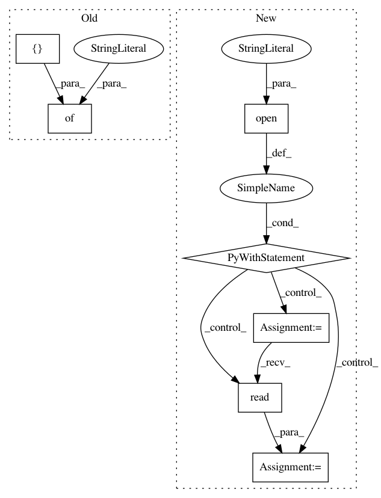

8e2dcb85db4def11e2361cc945f0331969f15b27,setup.py,,,#,52
Before Change
// To provide executable scripts, use entry points in preference to the
// "scripts" keyword. Entry points provide cross-platform support and allow
// pip to create the appropriate form of executable for the target platform.
entry_points={
"console_scripts": ["snntoolbox=bin.run:main"],
"gui_scripts": ["snntoolbox_gui=bin.gui.gui:main"]
},
)
After Change
from setuptools.command.test import test as TestCommand
with open("README.rst") as file:
long_description = file.read()
// Tell setuptools to run "tox" when calling "python setup.py test".
class Tox(TestCommand):
user_options = [("tox-args=", "a", "Arguments to pass to tox")]
def initialize_options(self):
In pattern: SUPERPATTERN
Frequency: 3
Non-data size: 7
Instances
Project Name: NeuromorphicProcessorProject/snn_toolbox
Commit Name: 8e2dcb85db4def11e2361cc945f0331969f15b27
Time: 2017-06-24
Author: bodo.rueckauer@gmail.com
File Name: setup.py
Class Name:
Method Name:
Project Name: stellargraph/stellargraph
Commit Name: 2f3f9e2f4ae603e48d0813a691cdd5265f6e38ba
Time: 2018-08-21
Author: docherty@gmail.com
File Name: setup.py
Class Name:
Method Name:
Project Name: aws/sagemaker-python-sdk
Commit Name: 1787f783e2f9fc4f2144bd4b4f90281a2bb018b5
Time: 2019-03-11
Author: andremoeller@users.noreply.github.com
File Name: tests/integ/test_inference_pipeline.py
Class Name:
Method Name: test_inference_pipeline_model_deploy